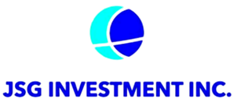

About JSG Investment
JSG는 이성적이고 투명한 판단으로, 건강하고 지속 가능한 성장을 이끄는 과감한 혁신가에게 투자합니다. JSG 인베스트먼트는 서울 소재 금융위원회 등록 신기술금융사입니다.
At JSG, we back bold innovators with disciplined reasoning and radical transparency to foster healthy, sustainable growth. We are a Seoul-based venture capital firm registered with Korea's Financial Services Commission as a New-Technology Finance Company.
우리는 당신이 가고자 하는 길을 걸어왔습니다.
애보트가 2017년에 53억 달러에 엘리어를 인수하기 전, 박상진 회장은 진성메디텍을 창업하고 엘리어에 매각한 후에, 엘리어 헬스케어 코리아 사장(2009–2012)으로 재직하면서 회사를 아시아 현장진단 시장의 핵심으로 성장시켰습니다. 이 여정은 실험실의 혁신을 글로벌 시장의 현실적 요구로 연결하는 도전이었습니다. 기술의 가능성을 보는 것과 그것을 시장이 받아들이게 만드는 것 - 이 둘 사이의 거리는 자본만으로는 좁혀지지 않습니다. 과학의 언어와 시장의 언어를 모두 체득한 이들이 필요합니다.
JSG의 강점은 자본이 아닙니다. 기업을 직접 일구고 매각한 팀, 복잡한 규제를 돌파하고 글로벌 비즈니스를 확장한 경험, 서울의 주요 의료기관에서부터 글로벌 금융 리더들까지 이어지는 수십 년에 걸친 혁신을 경험한 네트워크 - 이것이 우리의 자산입니다. 이러한 축적된 경험 덕분에 우리는 변화가 뚜렷하기 전에 그 가능성을 포착하고, 그것이 미래의 혁신이 될 때까지 지원할 수 있습니다.
이것이 우리가 미래를 내다보는 혁신가, 그리고 자본과 함께 서는 방법입니다. 거래를 중개하는 것이 아니라, 자본과 혁신이 만나 비전을 실현하는 결속을 만들어내는 파트너로서. 우리가 걸어온 길이 있기에, 앞으로 펼쳐질 여정을 압니다.
We've been where you're going.
Before Abbott's $5.3B acquisition of Alere in 2017, Alere acquired Jinsung Meditech to establish Alere Healthcare Korea. Our chairman Park Sang-jin built, sold and ran the business as President (2009-2012), to become a cornerstone of point-of-care diagnostics in Asia. Through that journey - from innovation to integration - we learned that the gap between laboratory success and market transformation isn't bridged by capital alone. It requires those who understand both languages fluently: the language of scientific rigor and the language of market reality.
Our edge isn't just capital. It's a team that has built and sold companies, navigated complex regulations, scaled global operations. It's advisors from Seoul's leading medical institutions to global financial leaders who've been there throughout innovation cycles spanning decades. These capabilities enable us to identify transformations before they're obvious and support them until they're undeniable.
This is how we stand with far-seeing innovators and capital. Not as intermediaries managing transactions, but as partners who align capital with innovation, forging the bond where we can realize the vision. Because we've walked the paths, we know the journey ahead.